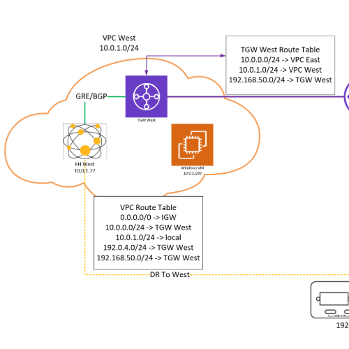

I'm a Systems & Infrastructure Engineer with 7+ years of IT experience
I started out as an intern doing in-house IT immediately after high school for an ad space company. After a couple of months, they moved me to full-time, and from there I grew my knowledge through real-world experience and certifications. I took some coursework in computer programming at Santa Fe College, but I found I was learning more on the job, so I went back to prioritizing hands-on experience and proving myself in the field.
Shortly after that decision, I started at West Networks as a helpdesk technician. By month 3, the CEO said, "We need someone AWS certified and able to support our clients," and by month 4, I had my first cert and cloud project done. From there I took on more and more of our cloud infrastructure work, primarily in AWS, and eventually grew into managing the support team while continuing to lead infrastructure projects.
I have a drive for technology and growth, and I'm the kind of person who, if I don't know something immediately, will figure it out using the resources I have.
AWS Certifications
I hold the AWS Certified Cloud Practitioner and am completing the AWS Certified Solutions Architect – Associate this month.
Microsoft Azure
Hands-on experience administering Azure and Entra ID for business clients, including user migrations, group-based access management, and automated onboarding that provisions SSO across Microsoft 365, Zoho CRM, ConnectWise, and other services.
Network Design
I have designed and implemented numerous networks, physical and virtual, and am a Peplink Certified Engineer.
Education Goals
After the AWS Solutions Architect – Associate, I'm pursuing the HashiCorp Terraform Associate, with more to come as my career requires.
Past Projects
Increased redundancy with reduced cost
My most recent AWS project was creating cross-region redundancy for a client while maintaining their VPN connectivity to the cloud, so they could access their server in the event of a disaster. My design not only cut their hosting costs compared to their previous setup, but also enabled Verizon to terminate BGP directly into their VPC, connecting their field devices back to their infrastructure over their private Verizon network.

VoIP Server In a private cloud
My first AWS project was deploying a 3CX server in AWS that tunneled over a VPN to the client's on-prem routers, encrypting all of their VoIP traffic. It also gave the client cloud-based backup options for their server and the ability to scale to their other locations.
Internal knowledge base Built with AI
To improve the efficiency of the support team, and eventually the entire company, I came up with the idea to create and train our own AI. I used ChatRTX by NVIDIA and linked it to our internal OneNote and other SharePoint resources. It was useful for everyone from new hires to senior employees, and because it never connected to the internet, it significantly reduced the risk of attacks and data leaks.